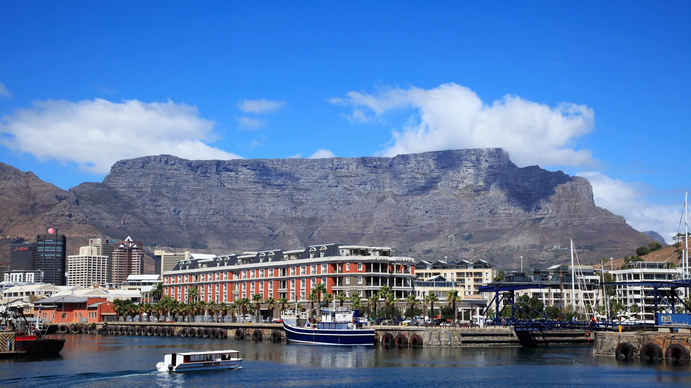
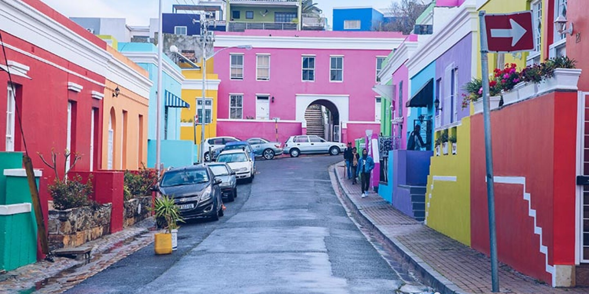
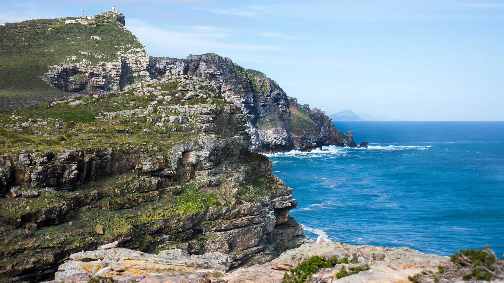
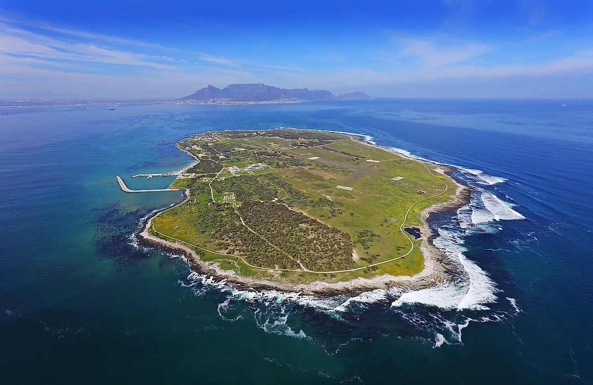

A Brief History
Cape Town, often referred to as the "Mother City", is the oldest city in South Africa, founded in 1652 as a supply station for Dutch ships sailing to East Africa, India, and the Far East. With a rich cultural heritage, Cape Town reflects the diverse history of South Africa, from the Khoisan and colonial eras to the modern vibrant city it is today.
Interesting Things to Do
- Visit Table Mountain, one of the New Seven Wonders of Nature
- Explore the Cape of Good Hope and witness stunning ocean views
- Walk through the colorful streets of the Bo-Kaap
- Take a ferry to Robben Island, where Nelson Mandela was imprisoned
- Relax on the famous beaches of Camps Bay and Clifton
- Go wine tasting in the nearby Stellenbosch and Franschhoek regions
Gallery




Contact Us
If you have any questions or want to know more, feel free to contact us at info@capetownexplore.com